GUITARMILO

0
Boss OD-3 OverDrive Pedal
El OD-3 es el último efecto de saturación de BOSS, basado en un nuevo diseño de fase dual para para unos sonidos más grandes y completos. La unidad variable y los controles de Tone crean sonidos saturados de suaves a extremos con un sustain casi infinito.